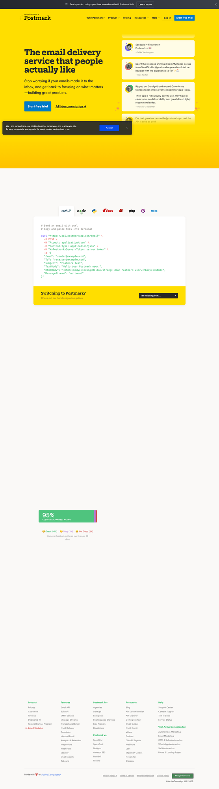

Designing the marketing site for a developer-first transactional email API
TL;DR
In this category the winning hero is dark, typographically confident, and code-first: a 3–5 word “X for developers” headline, one line of subcopy that names deliverability + scale, a real copy-pasteable code/cURL sample as the hero visual, and a dual CTA (“Start building” + “Documentation”). Resend and Postmark are the reference points to beat.
Back the promise with hard numbers presented as product UI (delivery rate, send latency, volume — e.g. Mailchimp’s 99.99% / <1s / 157B strip), explain the product as a scannable 4–6 cell feature grid (not prose), and prove credibility with a logo wall + curated developer quotes placed next to the feature they praise — never a generic testimonial dump.
Recommendations — in priority order
1 Hero = headline + live code sample + dual CTA, on a dark canvas
Lead with a short ICP headline (“Email for developers” / “The email API that lets you move blazing fast”) and one line of subcopy that explicitly promises deliverability & scale. The hero visual should be a real, copy-pasteable code block — a 3-line cURL or SDK send() call — not an abstract illustration. Give two CTAs: a bold primary (Start building / Get started, no “Book a demo”) and a quieter Documentation link. Evidence: Resend, Postmark, Twilio SendGrid below.
┌──────────────────────────────────────────────────────────┐ ⬢ YourAPI Features Docs Pricing Log in [Sign up] ├──────────────────────────────────────────────────────────┤ Email for developers Reach inboxes, not spam folders. Send transactional & marketing email at scale. [ Start building ] Documentation → ┌── send.ts ─────────────────────── [copy] ─┐ │ await resend.emails.send({ │ │ from: 'you@acme.dev', │ │ to: 'user@example.com', │ │ subject: 'Hello', html: '<p>Hi</p>' │ │ }) → 200 OK { id: "re_8f2…" } │ └────────────────────────────────────────────┘ └──────────────────────────────────────────────────────────┘
2 Put deliverability proof in the hero/upper fold — as numbers, rendered like product UI
Trust in this category is deliverability. Surface 3–4 hard metrics high on the page: inbox delivery rate, send latency/time-to-inbox, monthly volume, uptime. The best pages don’t just state them — they render them as live-looking dashboard cards/charts (DatoCMS’s “44ms” / “100% success” cards; Postmark’s “95% delivered” chart; Mailchimp’s stat strip). This converts a marketing claim into apparent evidence.
┌──────────────┬──────────────┬──────────────┬──────────────┐ │ 99.99% │ < 1 sec │ 99.4% inbox │ 157B / mo │ │ uptime │ to inbox │ delivery │ sent │ └──────────────┴──────────────┴──────────────┴──────────────┘ ▁▂▃▅▇▇▆▇▇ Placement test · Gmail 96% · Outlook 94% · Yahoo 92%
3 Explain the product as a scannable feature grid, not paragraphs
For the feature / “how it works” section, use a 4–6 cell icon grid (MagicBell’s provider cards; Brevo’s 6-cell grid) or a tight 3-step flow (ActiveCampaign’s “customer makes a purchase → send transactional email”). Each cell = icon + 2–4 word label + one benefit line. Per the Evil Martians study of 100 dev-tool pages, problem-oriented framing beats a bare function list. Name the dev-specific wins: SDKs & code recipes, webhooks/inbound parsing, log retention, idempotent sends.
How it works ┌────────────┐ ┌────────────┐ ┌────────────┐ │ { } │ │ (~) │ │ (o) │ │ SDKs + code │ │ <100ms send │ │ Webhooks + │ │ recipes │ │ latency │ │ inbound │ └────────────┘ └────────────┘ └────────────┘ ┌────────────┐ ┌────────────┐ ┌────────────┐ │ 📊 Logs & │ │ 🛡 Deliver- │ │ 🧩 React │ │ retention │ │ ability │ │ Email tmpl. │ └────────────┘ └────────────┘ └────────────┘
4 Developer social proof: logo wall + contextual quotes + named case studies
Stack three layers: (1) an auto-scrolling customer logo wall directly under the hero (~half of B2B dev pages do this); (2) curated developer testimonials placed next to the feature they praise, not in an isolated block; (3) named case studies tagged by vertical (ReadMe’s “Customer stories” with Socure / OneTrust). If you ship open-source SDKs (React Email is the obvious play here), a GitHub stars badge is high-credibility individual-dev proof.
Trusted by teams shipping at scale ▢ zendesk ▢ realtor ▢ QVC ▢ M&S ▢ Vercel →(auto-scroll) ┌─────────────────────────┐ ┌─────────────────────────┐ │ "Best DX of any email │ │ ★ 12.3k on GitHub │ │ API." — @dev, Acme │ │ react-email │ └─────────────────────────┘ └─────────────────────────┘
5 Hold a premium visual bar — restrained motion, generous whitespace, real product
Across the category the “table-stakes” aesthetic is clean typography, lots of breathing room, and no salesy flash. Stripe is the cross-category north-star for polish (gradient hero, real product mosaic, logo wall, testimonials). Match that restraint; differentiate on the code experience, not on louder animation.
Key examples
→ Scroll the deck sideways. Each card: company, source, why it’s here, and the specific detail to borrow.

The category’s benchmark hero, and the model for Rec 1: near-black canvas, a confident serif headline “Email for developers”, one subline that names spam folders / transactional & marketing at scale, and a dual CTA Get Started + Documentation.
Borrow: the 3-word ICP headline + “Documentation” as the secondary CTA, and the ruthless dark minimalism.

The single best all-in-one reference: hero “The email delivery service that people actually like” + Start free trial / API Documentation, a developer testimonial wall inside the hero, a copy-paste cURL sample (“paste this into Terminal”) under an SDK-language logo row, and a green “95% delivered” chart lower down. Hits all three brief focus areas on one page.
Borrow: the literal cURL-in-hero proof + the “delivered %” chart as deliverability evidence.

Headline “The Email API that lets you move blazing fast” with the trust-stat baked into subcopy: “delivering 190+ billion emails monthly.” The hero visual animates the lifecycle (Sending emails… → Emails sent ✓), and a recognizable logo wall (Zendesk, ServiceNow, realtor.com, QVC, M&S) sits right below.
Borrow: volume claim in the subcopy + immediate logo wall (Recs 2 & 4).

The textbook deliverability stat strip for Rec 2. Headline “Billions of transactional messages. One API.” and a dark band of four hard numbers: 99.99% uptime · <1 second delivery · 157 billion sends/mo · >99% delivery rate.
Borrow: the exact 4-metric layout (uptime / latency / volume / delivery rate).

Best demonstration of “stats as product UI” (Rec 2). DX headline “Build Fast. Ship Faster.” + “Launch docs and start building →”, then two live-looking metric cards: “API response time 44ms” and “API success rate 100%” as charts under the line “Low latency, high availability, zero surprises.”
Borrow: render latency & success-rate as small dashboard cards, not plain text.

Feature-grid model for Rec 3. Dark hero “Provider agnostic Transactional Email Notifications API for Developers”, then a clean 4-card “Delivery Providers” row (SendGrid, Mailgun, Amazon SES, Ping) — each icon + one benefit line.
Borrow: the 4-card capability grid with provider/feature icons.

A complete 6-cell feature grid for Rec 3: Email deliverability (“99% delivery rate”), Personalization, Fast setup (“SDKs, API libraries & code recipes”), Easy CMS integration, Inbound parsing, Extended log retention. Each is a short title + one benefit line.
Borrow: the exact dev-relevant feature taxonomy — deliverability, SDKs, inbound parsing, log retention.

A literal “how it works” mini-flow for Rec 3. Headline “Transactional email, your way”, then an annotated 2-step diagram over the imagery: “Customer makes a purchase” → “Send transactional email · Your order has been confirmed.”
Borrow: the trigger→email step diagram to explain transactional flows visually.

Developer social-proof model for Rec 4. A playful band “Nice docs 😍 — 6,000 teams and counting” beside a dense customer logo wall, then “Customer stories” case-study cards tagged by vertical (Socure / Risk Mgmt, OneTrust / Data Security).
Borrow: logo wall + count stat + vertical-tagged case-study cards.

Deliverability-as-product proof for Rec 2. Hero “More Deliverability Visibility…” + a capability pill row (Placement Testing, AI Bounce Analysis, Domain Health, Sender Scores) and a “Placement Test” UI showing Gmail 96% / 91% inbox bars with green-check benefit bullets.
Borrow: per-mailbox inbox-placement bars (Gmail/Outlook/Yahoo) as concrete deliverability evidence.

Patterns — the table stakes
Common denominators across the strong examples above (Resend, Postmark, Twilio SendGrid, MagicBell, Brevo) and the Evil Martians 100-page study:
| Pattern | What it looks like & who does it |
|---|---|
| “X for developers / for SaaS” headline | 3–5 words, ICP named explicitly. Resend (“Email for developers”), MagicBell (“…API for Developers”). Avoid clever-but-vague. |
| Code / cURL as the hero visual | Standard for SDK/infra products. Postmark’s “paste into Terminal” cURL; the broader convention of a copy-paste send() snippet. Signals “you can ship in minutes.” |
| Dual CTA: build + docs | Bold primary (“Start building / free”) + quiet secondary (“Documentation”). Developers want to try, not “book a demo.” Resend, Postmark, DatoCMS. |
| Deliverability / scale numbers up top | Delivery rate, latency, monthly volume, uptime — often as dashboard-style cards. Mailchimp (99.99% / <1s / 157B), Twilio (190B/mo), DatoCMS (44ms / 100%), Postmark (95% delivered). |
| Scannable feature grid / step flow | 4–6 icon cells or a 3-step trigger→send diagram. MagicBell provider cards, Brevo 6-cell grid, ActiveCampaign flow. |
| Logo wall + curated quotes | Auto-scrolling client logos (~half of B2B dev pages) + hand-picked testimonials, ideally next to the relevant feature. Twilio, ReadMe, Postmark. |
| Restrained, type-led visual system | Clean typography, generous whitespace, minimal flashy motion (“no salesy BS”). Resend, Stripe. |
Anti-patterns — what to avoid
- Function-list copy with no problem framing. The Evil Martians study ranks bare feature lists the weakest storytelling format; problem-oriented framing wins. Don’t open with “Send emails via API.”
- “Book a demo” as the primary hero CTA. Friction for developers, who want to try now. Reserve sales CTAs for an enterprise track; make “Start building / free” primary and drop credit-card gates.
- Abstract 3D blobs instead of a code sample. ClearBank’s “Connect through our API” slide is pretty but shows no code or numbers — a real risk for a dev product where the code is the proof. (Captured but deliberately not embedded as positive evidence.)
- Education-first hero (“What is transactional email?”). Mailjet leads its page with a definitional block before showing the product — fine for SEO further down, wrong as the opening move for a developer audience that already knows.
- Generic/uncaptioned testimonial dumps. Strong pages curate quotes and place them by the feature praised; a wall of anonymous praise reads as filler.
- Marketing-style hero stat with no product evidence. A bare “99% deliverability” line is weak; render it as a chart / placement-test UI (SuperSend, DatoCMS) so it reads as evidence, not a claim.
Unique angles — the things that made us look twice
- Postmark’s testimonials live inside the hero. Most sites push social proof below the fold; Postmark stacks a column of real developer quotes immediately right of the headline, so credibility lands in the first second alongside the CTA.
- DatoCMS’s “APIS GO BRRR” + live metric cards. A self-aware developer-meme eyebrow paired with genuine-looking
44ms/100%charts — personality and proof in one block. A differentiated way to do Rec 2. - ReadMe’s “Nice docs 😍” emoji headline. A category (developer docs) usually plays it dry; an emoji-led, conversational headline over a logo wall is disarming and on-brand for a dev audience.
- MagicBell’s “provider agnostic” positioning shown as a card row. It turns its architecture (SendGrid/Mailgun/SES under one API) into the hero proof — a sharp wedge if your differentiator is infrastructure flexibility.
- Strategic differentiator from web research: Postmark sells Message Streams (isolating transactional vs. broadcast reputation) and Resend sells React Email (author emails as React components) as their headline wedge. Pick one ownable technical angle and make it the hero, rather than competing on “reliable email API” generically.
A/B test context Lazyweb A/B
Read this as hypotheses, not measured lift. Lazyweb’s A/B research tool (PRO) returned 12 experiments, but all 12 are mobile-app subscription / paywall tests (Mimo, Reddit, Instacart, VPN, Quizlet…) — there are no developer-API / B2B landing-page experiments in the set, and the tool itself flags it as “a limited screenshot-diff evidence set… not statistically measured lift.” So this is weak, indirect evidence for our brief.
Only the cross-cutting, conversion-psychology lessons plausibly transfer to a landing page:
- Concrete benefit copy beats generic copy. Multiple paywalls (Instacart, Speechify, Reddit) won by replacing vague membership language with specific, named benefits. Maps to our anti-pattern against function-list copy — say “99.4% inbox delivery, <100ms send,” not “reliable email.”
- Dense hero → scannable list. Reddit moved from a “dense hero-and-card layout” to a clean vertical list of concrete perks — echoes Rec 3 (scannable feature grid over a wall of copy).
- Set expectations early / reduce commitment anxiety. Trial-clarity wins (Mimo, Quizlet) loosely support a low-friction, no-credit-card “Start building” CTA.
Findings — how we got here
Corpus check. Lazyweb has dedicated categories for this exact space (Transactional Email API, Email API for Developers, Email Infrastructure, Email Deliverability, Open-Source Notification Infrastructure). Direct competitors are present but thin — typically one captured page each (Resend, Loops, Twilio SendGrid, MagicBell, Brevo, Mailjet, Mailchimp). Coverage is deeper for the broader developer-tools design space (GitHub, Stripe, Replit, DatoCMS, ReadMe, Netlify), which we used as adjacent best-in-class references.
Method. We ran ~12 Lazyweb desktop searches (concept + category + company angles), de-duplicated to 47 candidate screenshots, then visually inspected each finalist before embedding — the search payloads here returned visionDescription: null and screenshotId: null, so we could not caption from metadata or use find_similar; every caption above is written from the image we actually viewed. We added live web research (Evil Martians’ 100-dev-tool-page study; Resend/Postmark comparisons) and a live capture of Postmark (absent from the Lazyweb corpus).
What the evidence says. The three brief focus areas have clear, convergent answers: (a) the hero is dark, code-first, ICP-headlined, dual-CTA, with deliverability numbers near the top; (b) the feature / how-it-works section is a scannable icon grid or a short trigger→send flow naming dev-specific capabilities; (c) developer social proof is a logo wall + curated, contextual quotes + named case studies (+ GitHub stars if open-source). The honest gap is that no first-party A/B data exists in-corpus for this page type, so conversion claims are reasoned from design convention, not measured lift.
Sources
Lazyweb screenshots (cited inline above):
- Resend — resend.com · cat. Email API for Developers
- Twilio SendGrid Email API — twilio.com/en-us/products/email-api
- Mailchimp Transactional — mailchimp.com/…/transactional-email
- ActiveCampaign Transactional — activecampaign.com/…/transactional-email
- MagicBell — magicbell.com/email
- Brevo (Sendinblue) Transactional — brevo.com/products/transactional-email
- DatoCMS Developer Experience — datocms.com/features/developer-experience
- ReadMe Customers — readme.com/customers
- SuperSend Deliverability — supersend.io/features/deliverability
- Stripe — stripe.com (cross-category polish reference)
Web (live capture + expert sources):
- Postmark — live capture, postmarkapp.com (
references/postmark-home.png) - Evil Martians — We studied 100 dev-tool landing pages — what actually works in 2025
- Nakora — Developer landing pages: best examples, templates & tips
- Postmark vs Resend comparison — postmarkapp.com/compare/resend-alternative (Message Streams, latency)
- Courier — Best Email API for developers (2026)
- Lazyweb A/B test research (PRO) — 12 mobile-paywall experiments; treated as caveated hypotheses only.
.lazyweb/ to your .gitignore.